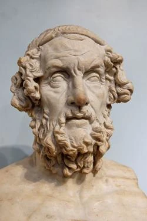

Homér
(8. století př. n. l.)

- historicky nedoložená postava
- údajně starý, slepý pěvec
- připisováno autorství eposů Ilias a Odyssea
Ilias / Iliada
- Ilias je řecky Trója
- 24 zpěvů a 15 000 veršů
- líčení posledního roku (51 dní) bojů mezi Trójany a Řeky
- začátek války v eposu líčen není
- obšírné líčení bitev a promluv postav zpomaluje děj
Odyssea
- Odysseus - ithaický král, válečník
- putování Odyssea domů z trójské války
- děj: během 41 dní (putování trvalo 10 let)
- umělecky náročný děj
- do děje zasahují bohové
- odyssea = Dlouhá, bludná pouť či složité, pestré životní osudy